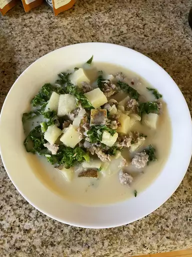

Return to homepage
Super-Delicious Zuppa Toscana

This is an oh-so-good recipe. Just the right amount of spice to make you take a cold drink but definitely keep coming back for more! This soup is irresistible!
Recipe by souporsweets
Prep Time: 25 minutes
Cook Time: 60 minutes
Total Time: 75 minutes
Servings: 6
Ingredients
- 1 pound bulk mild Italian sausage
- 1 ¼ teaspoons crushed red pepper flakes
- 4 slices bacon, cut into 1/2 inch pieces
- 1 large onion, diced
- 1 tablespoon minced garlic
- 5 (13.75 ounce) cans chicken broth
- 6 potatoes, thinly sliced
- 1 cup heavy cream
- ¼ bunch fresh spinach, tough stems removed
Directions
-
Cook the Italian sausage and red pepper flakes in a Dutch oven over medium-high heat until crumbly, browned, and no longer pink, 10 to 15 minutes. Drain and set aside.
-
Cook the bacon in the same Dutch oven over medium heat until crisp, about 10 minutes. Drain, leaving a few tablespoons of drippings with the bacon in the bottom of the Dutch oven. Stir in the onions and garlic; cook until onions are soft and translucent, about 5 minutes.
-
Pour the chicken broth into the Dutch oven with the bacon and onion mixture; bring to a boil over high heat. Add the potatoes, and boil until fork tender, about 20 minutes. Reduce the heat to medium and stir in the heavy cream and the cooked sausage; heat through. Mix the spinach into the soup just before serving.